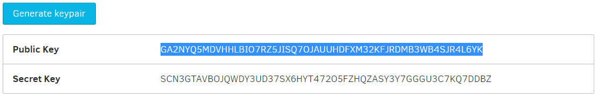

Friendbot
While you are testing your integration in the Kin Playground you can use the Friendbot service to create and fund accounts without spinning up your own server or funding test accounts with actual Kin. You can think of Friendbot as a wealthy friend who's willing to give you small batches of Kin while you test your integration.
When you are ready you can start developing your own back-end services using the Kin SDK for Python.
Kin SDKs provide classes and methods that allow you to create test accounts and fund them with Kin using Friendbot. The classes abstract the details, so this tutorial uses cURL so you can see what goes on behind the scenes.
Generate keypair
Every account on the Kin Blockchain has an associated keypair, including a private key used to sign transactions and a public address used to uniquely identify the account on the blockchain.
The online Kin laboratory includes a tool that generates valid keypairs for the Kin Blockchain. Please note that it currently only supports Kin blockchain's testnet.
Go to the laboratory and click Generate keypair. Copy the public key.

Create and fund a new account
In its simplest usage, Friendbot creates and funds a test account in response to a single command.
From a console, use cURL or other tool to send the following request to the Kin infrastructure Friendbot endpoint where <public address> is the public key you just copied:
curl "http://friendbot-testnet.kininfrastructure.com?addr=<pubic address>"
Note: The double quotes surrounding the URL are required to properly pass special characters to the HTTP GET methods shown in this tutorial.
If successful, Friendbot will return a JSON message that looks something like this:
{
"_links": {
"transaction": {
"href": "https://horizon-testnet.kininfrastructure.com/transactions/c1578edef2f6ac3c6e72134b5ea226c6391aef629d14fe8bee26e80016fc5249"
}
},
...
}
The string after .../transactions/ is the hash of the Blockchain transaction that created the account.
If you have already created an account with the same address, you'll get an error message that includes the following explanation:
"operations": [
"op_already_exists"
]
Inspect account
This next step shifts from the Friendbot service to the Horizon servers which provide REST API access to the Kin Blockchain Playground (testnet). Horizon allows you to submit transactions to the network, check the status of accounts, subscribe to event streams, etc. You will continue to use the Horizon API even after your Kin integration is in production.
The following request allows you to confirm the new account was correctly created and automatically received Kin. Note the change in domain reflecting the shift from Friendbot to Horizon access to the Kin Blockchain testnet.
curl "http://horizon-testnet.kininfrastructure.com/accounts/<public address>"
The returned JSON message includes the public address and the default balance of 10,000 KIN. (The default value may change.)
"account_id": "<public address>",
...
"balances": [
{
"balance": "10000.0000000",
"buying_liabilities": "0.0000000",
"selling_liabilities": "0.0000000",
"asset_type": "native"
}
],
...
Specify initial funding
You have the option to specify how much Kin to add to a new account using the amount parameter.
To specify initial funding first generate a new keypair.
Send the following commands...
curl "http://friendbot-testnet.kininfrastructure.com?addr=<public address>&amount=34"
curl "http://horizon-testnet.kininfrastructure.com/accounts/<public address>"
... and check the returned JSON message to confirm the new account has the funds you expect:
"balances": [
{
"balance": "34.00000",
"asset_type": "native"
}
],
Add Kin to account
As you test your integration you will probably need to model interactions through which your users can earn Kin. In the playground you can test this interaction by asking Friendbot to transfer Kin into an existing account.
Using the same public address you used when you specified an initial funding amount, send this command to the fund endpoint:
curl "http://friendbot-testnet.kininfrastructure.com/fund?addr=<public address>&amount=1200"
Confirm the target account successfully received the Kin:
curl "http://horizon-testnet.kininfrastructure.com/accounts/<public address>"
...
"balances": [
{
"balance": "1234.00000",
"asset_type": "native"
}
],
Note: Like any wealthy friend, there is a limit to how much Kin Friendbot will give you at one time. If you ask for too much the request will not throw an error but will only transfer the maximum allowable Kin into the target account. For now the maximum transfer from the fund endpoint is the same as the default initial funding amount of 10,000 Kin.
With the ability to create and fund accounts on the Kin Blockchain test environment you can debug and optimize the integration of Kin into your service.